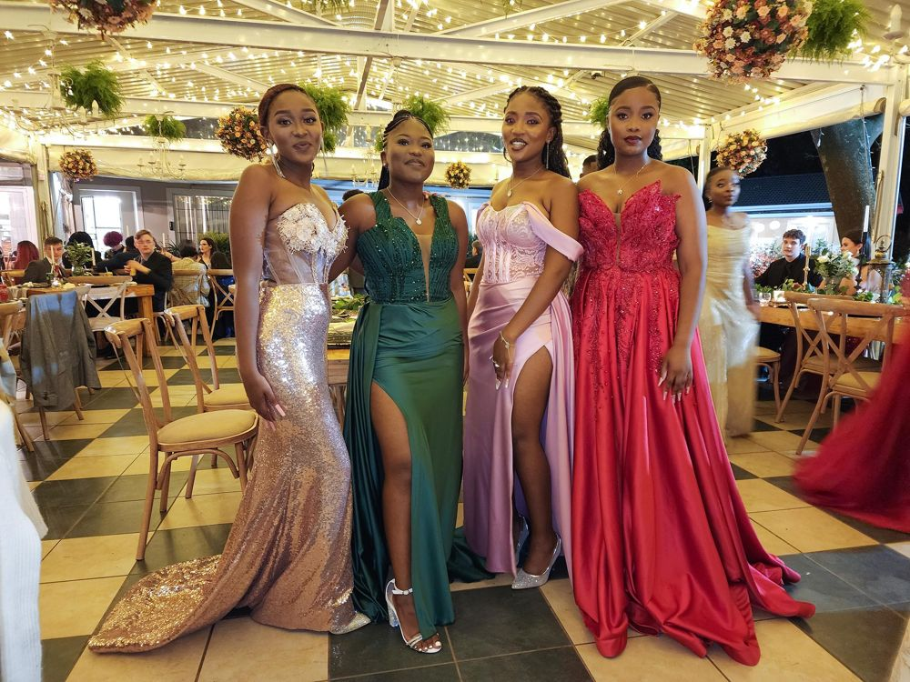
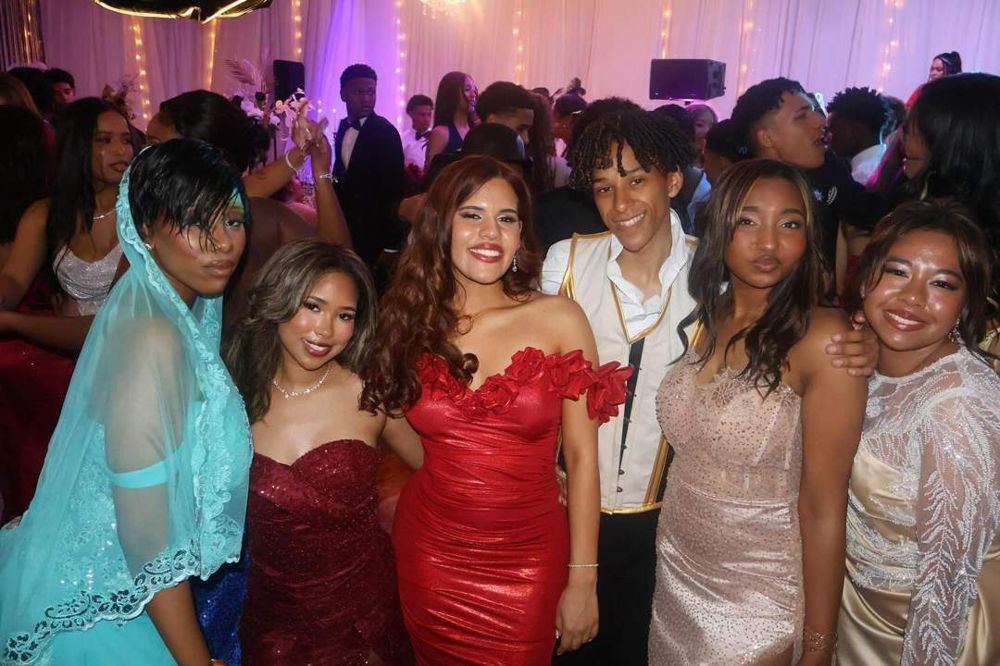

Matric Dance Outfits
We provide or source suitable clothing for learners who cannot afford their own matric dance outfits.
OUR PROGRAMMES
Practical support that helps learners prepare for their matric dance.
OUR SERVICES

We provide or source suitable clothing for learners who cannot afford their own matric dance outfits.

Local stylists and beauty professionals can donate their services to participating learners.
We collaborate with schools and community partners to create supportive experiences for learners.
FAQ